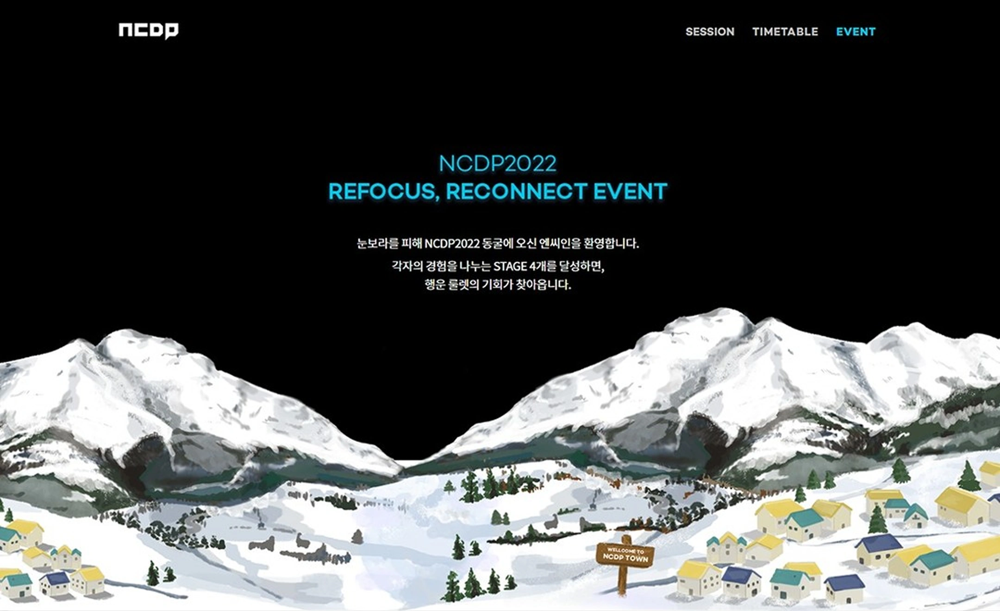

Project 07 · 2022
NCSOFT NCDP
44개 강연의 온라인 진행과 참가자 접근을 지원한 NCSOFT 사내 개발자 컨퍼런스 사이트
- Role
- 프론트엔드 개발
- Period
- 2022.04 — 2022.05
- Stack
- React · Vite · TypeScript
- Scope
- 컨퍼런스 · 신청 · 콘텐츠
01 / Overview
프로젝트 개요
본 프로젝트는 2022년 5월 25일부터 26일까지 이틀간 개최된 NC 사내 지식 공유 컨퍼런스인 NCDP(NCSOFT Developers Party)의 기술 공유 및 온라인 발표를 위한 전용 이벤트 사이트 전담 개발 작업입니다.
NCDP는 NC 직원들이 관심 있는 주제를 선택해 온/오프라인에서 자유롭게 수강하며 게임 기획, 제작, 운영 등 전 개발 과정에 축적된 노하우와 기술을 함께 나눌 수 있는 대규모 기술 공유 행사였으며, AI/머신러닝, 사운드, 게임디자인 등 총 44개의 강연이 진행되어 다양한 분야의 전문 지식이 공유되는 종합적인 개발자 컨퍼런스로 운영되었습니다.
이러한 대규모 사내 컨퍼런스의 성공적인 운영을 위해 44개 강연의 온라인 진행과 참가자들의 원활한 접근을 지원하는 디지털 플랫폼을 구축했으며, NC 직원들이 온/오프라인 환경에서 자유롭게 컨퍼런스에 참여할 수 있도록 하는 기술적 기반을 마련하여 대규모 사내 컨퍼런스의 디지털 전환을 지원하고 지식 공유 문화 확산에 기여하는 핵심적인 역할을 수행했습니다.
02 / Contribution
주요 작업
- 전 페이지 퍼블리싱 작업
- 일부 페이지 API 연동 작업
- 실시간 오류 대응
- 클라이언트 측 요구사항 반영
03 / Outcome
결과


